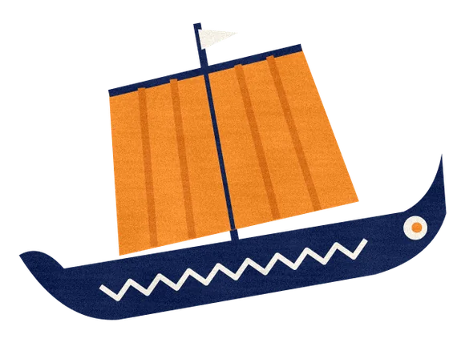
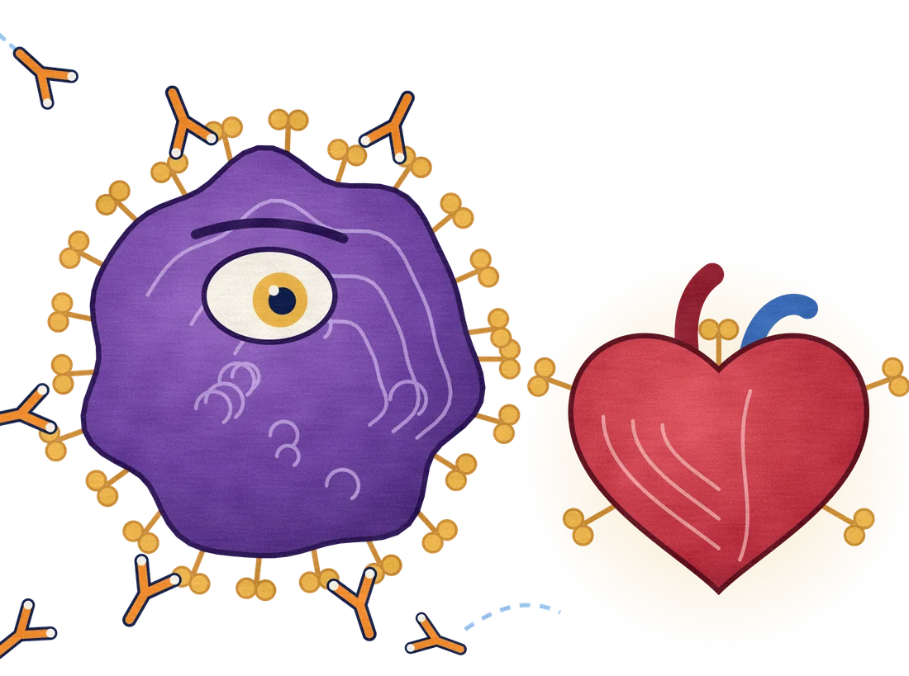
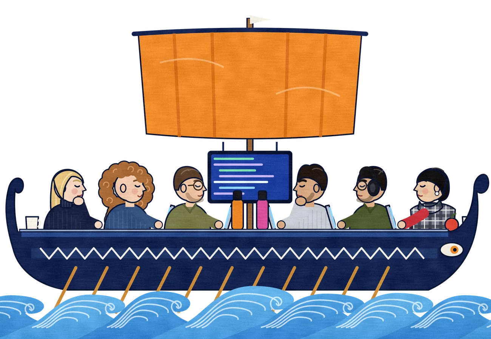

Antibody AI Hackathon · Oslo 2026
Final ranking: 30 HER2 antibody designs. Rank 1 is the one to make first.
← → / space / swipe to fly · drag the scatter on slide 5

I · Unmet need
We target HER2 in the tumor microenvironment, not the HER2 the heart relies on.
The tumor is more acidic (≈ pH 6.5) than blood (7.4). A histidine gains a charge as pH falls, so a design can in principle hold on harder in the tumor.
pKa 6.0 → fraction-protonated gap 0.20
gap 0.47 between 6.5 and 7.4
Predicted for every design — a prediction, not a measurement.

II · Our voyage
225 unique optimisation designs (new CDRH3 on trastuzumab) and 220 de novo nanobodies.
139 pass novelty, 130 pass the pH gate; only designs with a structure refold go on (18 parents).
Boltz-2 interface error, then Mol-1 with no template: all 22 optimisation designs sit in trastuzumab's pose.
Binding models decide the order. pH and safety break ties; they never override.
Top 4 get a framework twin (VH S85N + R87T) linked to higher melting temperature.
Trastuzumab with one new CDRH3 loop. The four twins also carry two framework mutations.
All three loops designed from scratch. No design passed an independent structure check.
III · Landfall
optimisation designs (18 parents + 4 twins)
de novo, placed last — no independent check found them credible
measured results. Affinity, thermostability and pH selectivity are all predictions.
Next: fly into the design space — each point is one ranked design.
The design space
X predicted KD (log, right = weaker)
Y binder probability
Z Mol-1 pose error vs trastuzumab (Å)
optimisation framework twin de novo (on the floor)
Best predicted KD ≈ 9 nM vs trastuzumab ≈ 0.2 nM — about 40× weaker. We do not expect to win on affinity.
Drag to rotate · hover a point · scroll disabled
The ranked designs
Thermostability = loop-confidence proxy; safety = sequence proxy, not a toxicity prediction. Rows 2, 4, 6 are framework twins.
Honesty slide
| Question | What we have | How far to trust it |
|---|---|---|
| Affinity | Binder + KD models (525k measured variants); Boltz-2 interface error | Predictions only. Best ≈ 9 nM vs 0.2 nM. |
| Thermostability | Literature framework twins; loop-confidence proxy; thermal MD on trastuzumab only | No design simulated (MD stopped early). The twins are the real bet. |
| pH 6.5 vs 7.4 | pKa-based prediction; two-pH MD on the reference | Unvalidated, noisy; MD gap within replica noise. |
| Safety | Sequence liabilities, hydrophobicity, charge | A proxy. Cardiac toxicity is target-mediated; every design on this epitope inherits it. |
| Structure | Boltz-2 (templated); Mol-1, OpenFold3 (no template) | Supports the binding mode, cannot tell good loops from bad. |
IV · The crew and the journey ahead
① Measure the top designs — binding and thermostability in the lab.
② Finish thermal and two-pH MD on our designs.
③ Test the pH idea directly: binding at 6.5 vs 7.4.
④ Add an energy estimate (MM/GBSA) to the ranking.
Hand-in file: odyssey.csv (30 rows, with track column)
